12.1 Qual a distribuição dos valores numéricos?
Onde os dados estão centrados? Como eles estão espalhados? Eles são simétricos, i.e., a distribuição é normal? São enviesados, bi-modais? Existem valores extremos?
Já vimos algumas operações matemáticas com vetores e também como usar as funções hist() e boxplot() para gerar figuras de distribuição de variáveis numéricas individualmente.
Vimos também como fazer iterações usando funções da família apply().
Também já aprendemos sobre a função summary(), que faz um resumo de todas as variáveis nos seus dados e aqui vamos entender isso melhor, apresentando a função quantile(), que permite extrair os quantis, que são valores que dividem uma distribuição probabilística em intervalos iguais de probabilidade.
Com essas ferramentas, podemos descrever a distribuição de nossas variáveis numéricas.
12.1.1 Dados do tutorial
Vamos importar novamente os conjuntos de dados de avistamento de aves do cerrado (utilizado no capítulo 11) e de parcelas em caixetais (utilizado no capítulo 7):
## Lendo a planilha com read.table
avesc <- read.table("aves_cerrado.csv", row.names = 1, header = T, sep = ";", dec = ",", as.is = T, na.strings = c("NA", "", "NULL"))caixeta <- read.csv("caixeta.csv") ## arquivo caixeta.csv deve estar no diretorio de trabalho
# note que mantemos todos os argumentos padrão (veja o formato do arquivo caixeta)## Resumo estatistico: medias, media truncada e mediana, quantis
# pegando apenas as variáveis numéricas
avesc[, 2:4]| urubu | carcara | seriema | |
|---|---|---|---|
| Ce1 | 5 | 18 | 6 |
| Ce2 | 7 | 7 | 6 |
| Ce3 | 5 | 14 | 4 |
| Ce4 | 3 | 12 | 5 |
| Ce5 | 4 | 16 | 4 |
| Ce6 | NA | 20 | NA |
| Ce7 | 6 | 19 | 4 |
| Ce8 | 4 | 21 | 10 |
| Ce9 | 2 | 11 | 6 |
| Ce10 | 5 | 9 | 7 |
| Ce11 | 6 | 12 | 8 |
| Ce12 | 6 | 24 | 5 |
| Ce13 | 7 | 17 | 6 |
| Ce14 | 6 | 16 | 4 |
| Ce15 | 5 | 15 | 6 |
| Ce16 | 5 | 12 | 8 |
| Ce17 | 3 | 14 | 3 |
| Ce18 | 13 | 14 | 4 |
| Ce19 | 8 | 21 | 2 |
| Ce20 | 7 | 13 | 4 |
| CC1 | 22 | 8 | 5 |
| CC2 | 10 | 16 | 3 |
| CC3 | 17 | 14 | 3 |
| CC4 | 16 | 16 | 6 |
| CC5 | 20 | 10 | NA |
| CC6 | 18 | 7 | 3 |
| CC7 | 16 | 8 | 5 |
| CC8 | 14 | 8 | 4 |
| CC9 | 12 | 7 | 4 |
| CC10 | 15 | 14 | 4 |
| CC11 | 9 | 11 | 8 |
| CC12 | 11 | 12 | 4 |
| CC13 | 20 | 11 | 4 |
| CC14 | 18 | 11 | 3 |
| CC15 | 8 | 7 | 6 |
| CC16 | 15 | 14 | 5 |
| CC17 | 17 | 8 | 5 |
| CC18 | 17 | 14 | 6 |
| CC19 | 12 | 7 | 6 |
| CC20 | 12 | 9 | 12 |
| CL1 | 11 | 3 | 9 |
| CL2 | 10 | 5 | 6 |
| CL3 | 19 | 5 | 5 |
| CL4 | 15 | 8 | 4 |
| CL5 | 13 | 6 | 6 |
| CL6 | 12 | 5 | 4 |
| CL7 | 16 | 5 | 5 |
| CL8 | 13 | 3 | 6 |
| CL9 | 19 | NA | 5 |
| CL10 | 19 | 5 | 4 |
| CL11 | 11 | 3 | 9 |
| CL12 | 18 | 3 | 7 |
| CL13 | 15 | 6 | 5 |
| CL14 | 19 | 4 | 4 |
| CL15 | 13 | 4 | 6 |
| CL16 | 16 | 5 | 2 |
| CL17 | 10 | 3 | 10 |
| CL18 | 12 | 6 | 7 |
| CL19 | 18 | 5 | 4 |
| CL20 | 19 | 4 | 4 |
# podemos fazer um resumo estatístico da distribuição de cada uma dessas colunas
summary(avesc[, 2:4])| urubu | carcara | seriema | |
|---|---|---|---|
| Min. : 2.00 | Min. : 3.00 | Min. : 2.000 | |
| 1st Qu.: 7.00 | 1st Qu.: 5.50 | 1st Qu.: 4.000 | |
| Median :12.00 | Median : 9.00 | Median : 5.000 | |
| Mean :11.93 | Mean :10.25 | Mean : 5.345 | |
| 3rd Qu.:16.50 | 3rd Qu.:14.00 | 3rd Qu.: 6.000 | |
| Max. :22.00 | Max. :24.00 | Max. :12.000 | |
| NA’s :1 | NA’s :1 | NA’s :2 |
# essa função me retorna várias estatísticas da distribuição de cada variável
# os valores mínimos e máximos
# a tendência central pela média e pela mediana
# e o 1 e o 3 quartil, que juntamente com o mínimo, o máximo e mediana,
# indicam as divisões dos dados em quatro partes identicas (vamos ver isso melhor abaixo)
# funcao summary, mas não retorna por, exemplo, o desvio padrão ou a variância das colunas.# e não podemos fazer isso apenas com a função sd para todas as colunas
sd(avesc[, 2:4]) # ops deprecado (eu estou trabalhando com uma matriz)# mas posso usar a funcao apply (para cada coluna, argumento MARGIN)
apply(avesc[, 2:4], 2, sd, na.rm = TRUE)## urubu carcara seriema
## 5.429372 5.383862 2.013566# summary já retorna isso, mas eu poderia usar para qualquer funcao
apply(avesc[, 2:4], 2, median, na.rm = TRUE)## urubu carcara seriema
## 12 9 5## urubu carcara seriema
## 11.932203 10.254237 5.344828## urubu carcara seriema
## 2 3 2## urubu carcara seriema
## 22 24 12| urubu | carcara | seriema | |
|---|---|---|---|
| 0% | 2.0 | 3.0 | 2 |
| 25% | 7.0 | 5.5 | 4 |
| 50% | 12.0 | 9.0 | 5 |
| 75% | 16.5 | 14.0 | 6 |
| 100% | 22.0 | 24.0 | 12 |
## 0% 25% 50% 75% 100%
## 2.0 7.0 12.0 16.5 22.0# aparecem também quando usamos summary, que no entanto, retorna a média artimética,
# que é o único valor que não é um quartil.
summary(avesc$urubu)| Min. | 1st Qu. | Median | Mean | 3rd Qu. | Max. | NA’s |
|---|---|---|---|---|---|---|
| 2 | 7 | 12 | 11.9322 | 16.5 | 22 | 1 |
# para entender melhor isso vamos graficar:
# primeiro num histograma
hist(avesc$urubu, main = "Avistamentos de Urubu", xlab = "Número de aves observadas por local")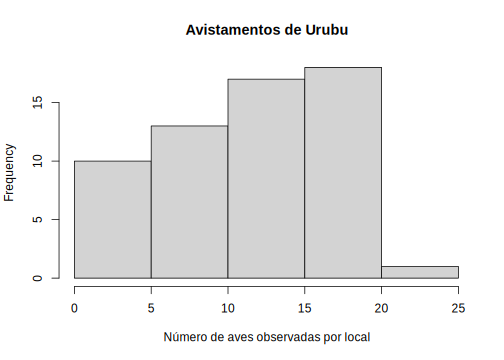
# melhorando um pouco
hist(avesc$urubu, main = "Avistamentos de Urubu", xlab = "Número de aves observadas por local", breaks = 22, col = "gray")
# agora adicionamos em azul os quartis
abline(v = quantile(avesc$urubu, na.rm = TRUE), col = "blue", lwd = 5)
# note que as barras azuis estão igualmente espaçadas no eixo X, pois elas dividem a distribuição em partes iguais
# vamos plotar a média
abline(v = mean(avesc$urubu, na.rm = TRUE), col = "red", lty = "dotted", lwd = 6)
# e a mediana
abline(v = median(avesc$urubu, na.rm = TRUE), col = "green", lty = "dotted", lwd = 6)
# note como a mediana é equivalente ao quartil que indica 50% na divisão simétrica dos dados e que neste caso a diferença entre média e mediana é muito pequena, pois os dados são bem simétricos em relação à tendência central
# vamos adicionar o desvio padrão:
v1 <- sd(avesc$urubu, na.rm = TRUE) + mean(avesc$urubu, na.rm = TRUE)
v2 <- mean(avesc$urubu, na.rm = TRUE) - sd(avesc$urubu, na.rm = TRUE)
abline(v = c(v1, v2), col = "yellow", lty = "solid", lwd = 4)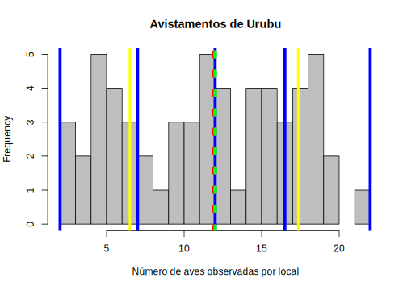
# agora com um box plot:
boxplot(avesc$urubu)
abline(h = quantile(avesc$urubu, na.rm = TRUE), col = "blue", lwd = 2)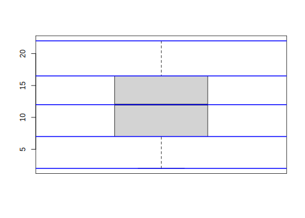
# Média truncada = e.g. TIRANDO 10% DOS VALORES NOS EXTREMOS (posso ver como muda, caso tenha valores extremos, vai mudar muito)
?mean # veja o argumento trim## urubu carcara seriema
## 12.000000 9.897959 5.145833## urubu carcara seriema
## 11.932203 10.254237 5.344828# valores de quantils em outras probabilidades
quantile(avesc$urubu, probs = seq(from = 0, to = 1, by = 0.1), na.rm = TRUE) # a cada 10%## 0% 10% 20% 30% 40% 50% 60% 70% 80% 90% 100%
## 2.0 5.0 6.0 8.0 11.0 12.0 13.8 16.0 17.4 19.0 22.0## [1] 1027 7## [1] "local" "parcela" "arvore" "fuste" "cap" "h" "especie"| local | parcela | arvore | fuste | cap | h | especie |
|---|---|---|---|---|---|---|
| chauas | 1 | 1 | 1 | 210 | 80 | Myrcia sulfiflora |
| chauas | 1 | 3 | 1 | 170 | 80 | Myrcia sulfiflora |
| chauas | 1 | 4 | 1 | 720 | 70 | Syagrus romanzoffianus |
| chauas | 1 | 5 | 1 | 200 | 80 | Tabebuia cassinoides |
| chauas | 1 | 6 | 1 | 750 | 170 | indet.1 |
| chauas | 1 | 7 | 1 | 320 | 80 | Myrcia sulfiflora |
## 'data.frame': 1027 obs. of 7 variables:
## $ local : chr "chauas" "chauas" "chauas" "chauas" ...
## $ parcela: int 1 1 1 1 1 1 1 1 1 1 ...
## $ arvore : int 1 3 4 5 6 7 8 9 10 10 ...
## $ fuste : int 1 1 1 1 1 1 1 1 1 2 ...
## $ cap : int 210 170 720 200 750 320 480 240 290 310 ...
## $ h : int 80 80 70 80 170 80 160 140 120 120 ...
## $ especie: chr "Myrcia sulfiflora" "Myrcia sulfiflora" "Syagrus romanzoffianus" "Tabebuia cassinoides" ...# vamos calcular o DAP a partid o CAP (circunferencia a altura do peito)
# se cap = 2*pi*dap/2 portanto dap = cap/pi
dap <- caixeta$cap / pi
hist(dap) # veja distribuição diametrica desses dados (é uma típica log-normal)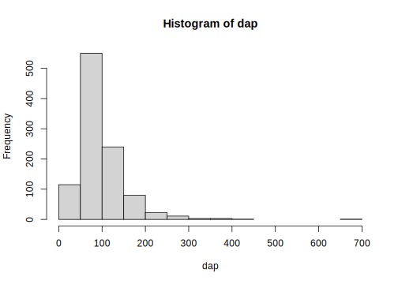
| local | parcela | arvore | fuste | cap | h | especie | dap |
|---|---|---|---|---|---|---|---|
| chauas | 1 | 1 | 1 | 210 | 80 | Myrcia sulfiflora | 66.84508 |
| chauas | 1 | 3 | 1 | 170 | 80 | Myrcia sulfiflora | 54.11268 |
## NULL# altura das arvore em cada localidade
chauas.h <- caixeta[caixeta$local == "chauas", "h"]
jureia.h <- caixeta[caixeta$local == "jureia", "h"]
retiro.h <- caixeta[caixeta$local == "retiro", "h"]
# para a localidade chauas
hist(chauas.h, breaks = 20)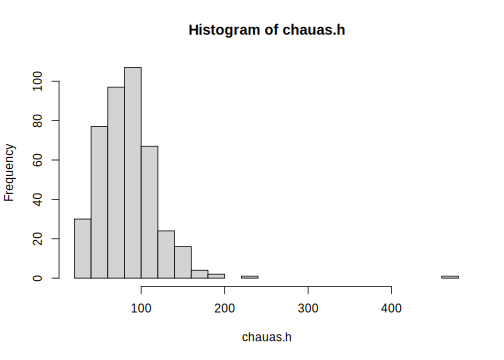
## [1] 480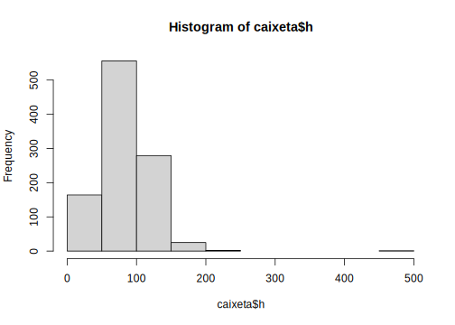
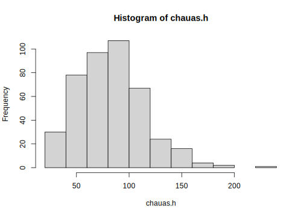
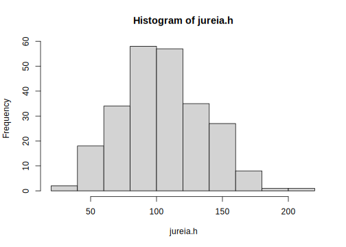
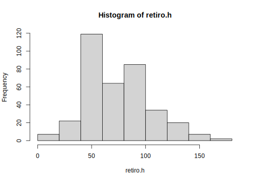
## [1] 20 230## [1] 30 220## [1] 5 170xl <- c(0, 250) # limitando o grafico aos extremos de todo o conjunto de dados
yl <- c(0, 150)
hist(chauas.h, breaks = 30, xlim = xl, ylim = yl)
hist(jureia.h, add = TRUE, breaks = 30, col = "blue")
hist(retiro.h, add = TRUE, breaks = 30, col = "green")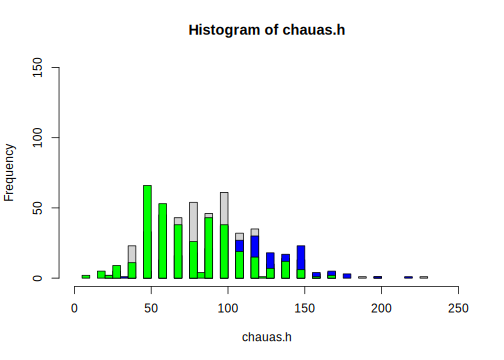
# mas seria melhor ver cada distribuicao individualmente por localidade
# dividimos o dispositivo em 3 linhas e uma coluna
par(mfrow = c(3, 1))
hist(chauas.h, breaks = 20, xlim = xl, ylim = yl, col = "green")
hist(jureia.h, breaks = 20, xlim = xl, ylim = yl, col = "blue")
hist(retiro.h, breaks = 20, xlim = xl, ylim = yl, col = "red")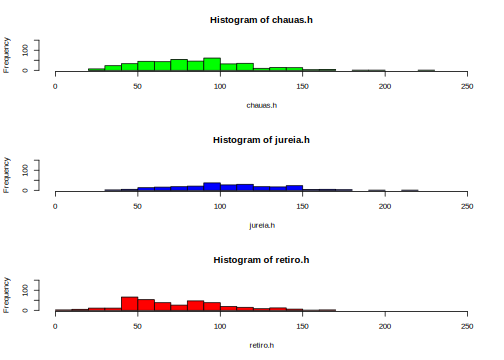